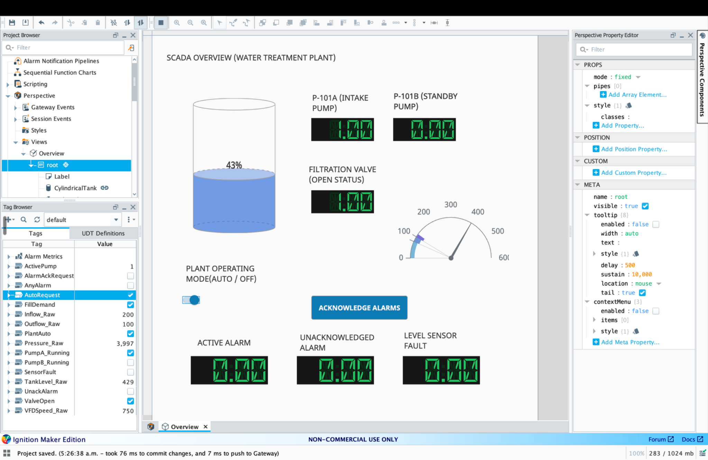
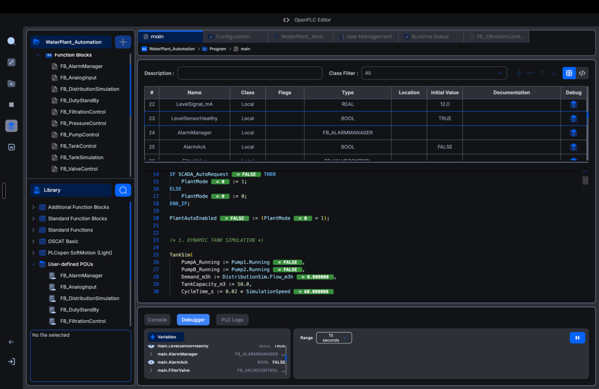

Water Treatment Plant: PLC, HMI & SCADA Automation
Developed a software-based water-treatment and distribution control system using IEC 61131-3 Structured Text, reusable PLC function blocks, Modbus TCP process-data mapping, and an Ignition Perspective operator interface. The system models equipment permissives, tank-level regulation, duty/standby intake pumping, filtration protection, and PI-based distribution pressure control.
The completed Ignition Perspective overview showing the simulated plant and its monitoring and control points.
01 / System architecture
PLC scan logic, Modbus registers, and SCADA supervision.
OpenPLC Runtime v4 executes inside Docker on macOS; a Modbus TCP slave exposes the process image to Ignition Maker Edition, which hosts the Perspective SCADA dashboard.
PLC application
The PLC application is partitioned into ten reusable function blocks covering pump feedback and start timers, duty/standby arbitration, tank simulation and hysteresis control, analog scaling, filtration, valve actuation, PI pressure control, distribution dynamics, and alarm management.
Industrial communications
Six 16-bit holding registers publish scaled analog measurements; Modbus coils expose equipment states and receive operator requests. Ignition communicates with Unit ID 1 over a localhost-forwarded TCP connection.
Operator interface
Perspective displays tank inventory, intake-pump state, filtration valve position, distribution pressure, flow, VFD command, and alarms, with bidirectional AUTO/OFF control and alarm acknowledgment.
02 / Control implementation
Sequential control, permissives, and fault-handling logic.
Tank-level control
The 50 m³ tank model integrates inflow and distribution demand. Level-based hysteresis asserts fill demand at 35% and removes it at 80%, reducing unnecessary start/stop cycling.
Duty/standby intake pumps
Duty/standby arbitration sequences two intake pumps, monitors run feedback and start timeout, latches individual faults, and transfers demand to the available standby pump.
Filtration interlocks
Filter differential pressure ≥80 kPa sets a blockage latch and inhibits intake. Reset requires differential pressure ≤40 kPa and an explicit operator fault-reset request.
Pressure control
A PI regulator adjusts simulated VFD speed to control distribution-header pressure near a 400 kPa reference; low-tank and sensor-validity permissives disable the distribution command.
Level sensing
A simulated 4-20 mA level-transmitter chain converts analog current to an engineering-unit level signal and applies signal-health checks before permissive evaluation.
Operator modes & alarms
OPC/Modbus tags convey mode requests, alarm indication, and acknowledgment pulses; pump, valve, level, and sensor safety decisions remain in PLC logic.
03 / Actual project screenshots
Runtime screenshots and operating-state evidence.
Screenshots capture the OpenPLC Structured Text/debug environment, the Perspective process overview, and automatic operation with live Modbus measurements.

Automatic operation. The intake pump is running; observed flow values are 20 m³/h inflow and 10 m³/h outflow, with pressure near the 400 kPa target.

PLC implementation. Structured Text main program, reusable function blocks and live debugger values.
04 / Commissioning
Software commissioning and functional verification.
1. Normal operation
Verified AUTO/OFF transitions, filtration-valve permissives, duty-pump operation, 35%/80% level hysteresis, and tank fill shutdown.
2. Distribution pressure
Observed simulated distribution pressure stabilizing near the 400 kPa setpoint, with VFD speed near 75% under the demonstrated demand condition.
3. Fault response
Injected simulated sensor-failure, duty-pump feedback, low-tank, and filter differential-pressure faults and observed the corresponding trip and inhibit logic.
4. Filtration recovery
Confirmed that the filtration blockage latch persists after differential pressure recovers and clears only when the fault-reset input is asserted under safe conditions.
Scope: This is a software-only controls and SCADA demonstrator. No physical process equipment, industrial PLC I/O, or certified safety instrumented function was deployed or commissioned.
05 / Source code & project files
Source code, configuration, and commissioning evidence.
The repository contains IEC 61131-3 Structured Text source, Modbus server/address configuration, Ignition project and tag exports, HMI screenshots, and commissioning notes.